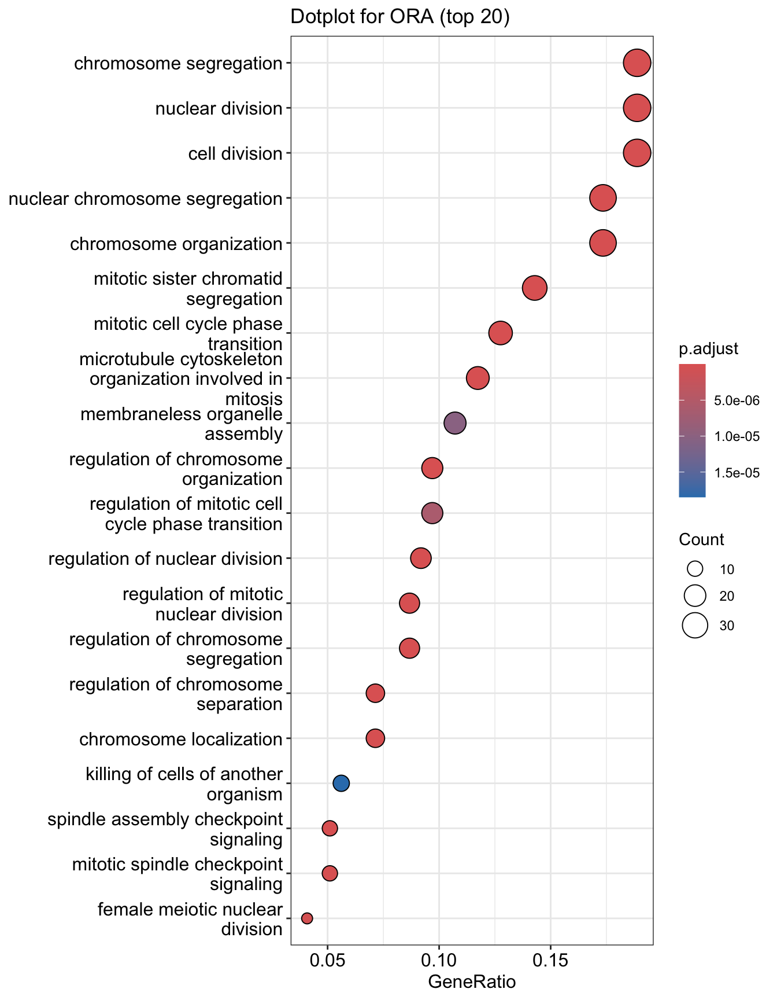
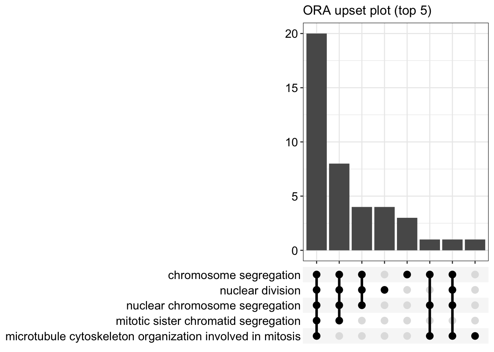
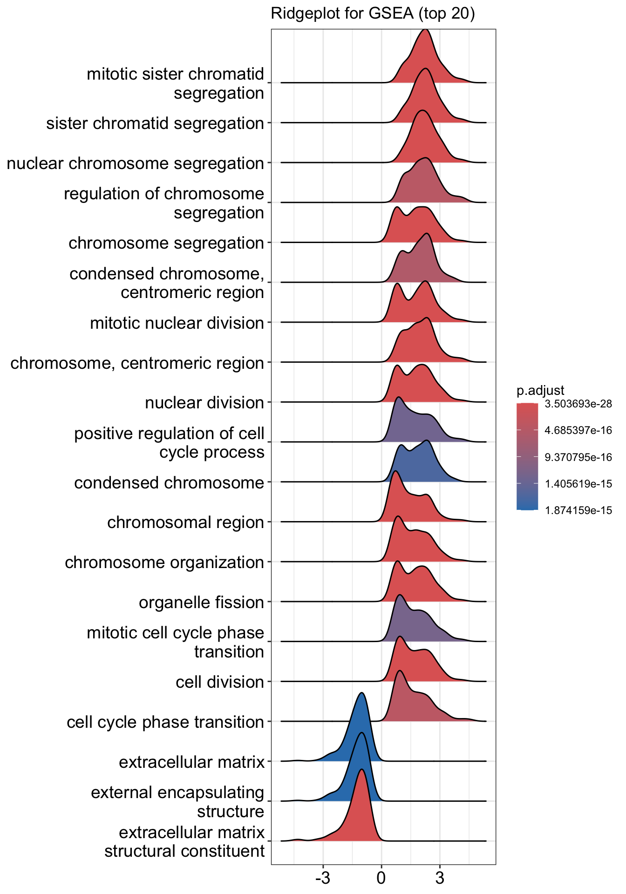
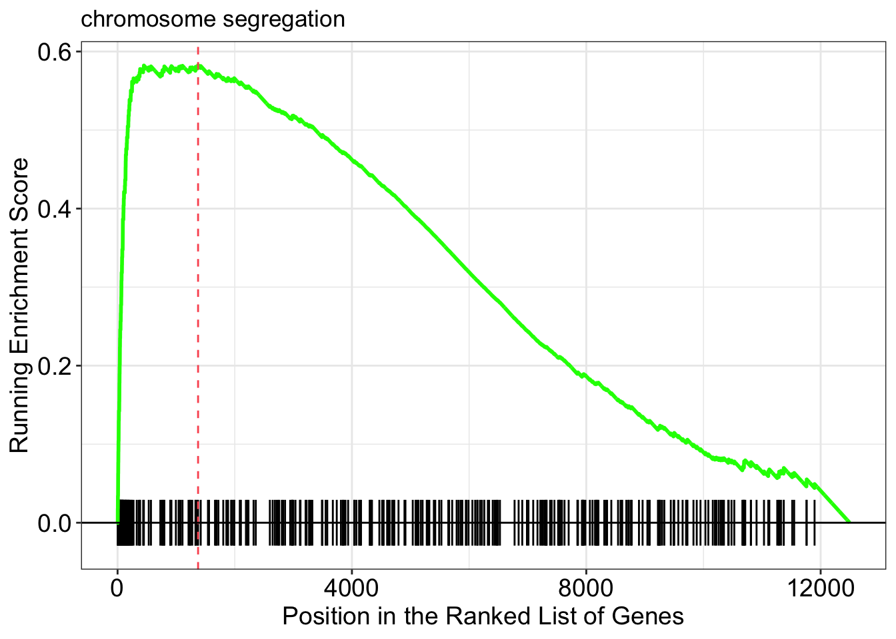

Module 8
Additional slides about the tools Segway and BEHST presented during the lecture
Optional Module 8 Lab 1: Gene Regulation and Motif Analysis Practical Lab /chIP-seq
- Perform pathway analysis starting with a chIP_seq bed file and visualize the results using Cytoscape/EnrichmentMap.
- Be able to use the tool GREAT with distal and proximal parameters.
- Run MEME-chip to find over-enrichment of transcription factors.
- Optional: learn how to use iRegulon to find targets of a transcription factor of interest and find orthologs using the tool g:Profiler/g:orth.
This practical lab consists of 6 exercises and 2 of them are optional. Follow the step-by-step checklist through the exercises.
Before starting the lab, download the files:
Right click on link below and select “Save Link As…”.
Place the file in your CBW work directory in the corresponding module directory.
- GSE128767_RUNX1_ChIP.peaks.bed
- Distal_GOBP_greatExportAll.tsv
- Proximal_GOBP_greatExportAll.tsv
- RUNX1_Affy.gmt
- GSE128767_RUNX1_ChIP.peaks.fasta
EnrichmentMap and Cytoscape layouts: Network layouts are flexible and can be rearranged. What you see when you perform these exercises may not be identical in appearance to what you see in the screenshots in the practical lab, or what you have seen other times that you have performed the exercises.
Dataset used during this practical lab
ChIP-seq for RUNX1 from pools of mouse CD1 fetal ovaries (E14.5)
NCBI GEO: GSE128767
From the paper:
RUNX1 maintains the identity of the fetal ovary through an interplay with FOXL2
Nicol B, Grimm SA, Chalmel F, Lecluze E et al.
Nat Commun 2019 Nov 11;10(1):5116.
PMID: 31712577
Abstract:
Sex determination of the gonads begins with fate specification of gonadal supporting cells into either ovarian granulosa cells or testicular Sertoli cells. This process of fate specification hinges on a balance of transcriptional control. We discovered that the transcription factor RUNX1 is enriched in the fetal ovary in rainbow trout, turtle, mouse, and human. In the mouse, RUNX1 marks the supporting cell lineage and becomes granulosa cell-specific as the gonads differentiate. RUNX1 plays complementary/redundant roles with FOXL2 to maintain fetal granulosa cell identity, and combined loss of RUNX1 and FOXL2 results in masculinization of the fetal ovaries. To determine whether interplay between RUNX1 and FOXL2 occurs at the chromatin level, we performed genome-wide analysis of RUNX1 chromatin occupancy in E14.5 ovaries. The top de novo motif identified in RUNX1 ChIP-seq matched the RUNX motif. We found that RUNX1 chromatin occupancy was partially overlapping with FOXL2 chromatin occupancy in fetal ovaries.

They found that RUNX1 is expressed in the fetal ovary at day 14 in mice and that it is necessary for a good development of the ovary.

A KO of Runx1 and another TF Foxl2 abolished the normal development of the ovary.
#Why did we choose this dataset?
- RUNX1 is a transcription factor that is interesting to study as it has major biological functions.
- chIP-seq peaks are stored in a bed file that can be download from GEO entry.
- Linked to transcriptomic data GSE129038
- Quality of the data
#The 3 pieces of information that we need to get before starting the analysis are:
- the model organism: Mus musculus
- genome version: mm10
- bed file : GSE128767_RUNX1_ChIP.peaks.bed
We have indicated below how we retrieved these information but you don’t need to do it for the lab:
- In the main GEO entry GSE128767
- click on one of the samples (for example - GSM3684638).
- On the sample page scroll down to the “Data processing” section
- The organism is mus musculus and the reference genome is mm10
- 3 files are available from the GEO entry (see below).

- The bed file provided by the authors (GSE128767_RUNX1_ChIP.peaks.bed) (linked on the main dataset page under supplementary file - GSE128767 ) has the right format to be used by GREAT for the pathway analysis; The first 3 fields contain the chromosome name, start and end. They are the 3 required fields. The fourth column is optional and consists of the chromosomal position, followed by MACS2 score value and FDR. Below is an example view of the BED file:

Exercise 1 - Run pathway analysis using GREAT
Perform pathway enrichment
- Open a web browser and open GREAT
- In Species Assembly choose Mouse: GRCm38(UCSC mm10, Dec. 2011)
- InTest regions Click on Choose file and locate the file GSE128767_RUNX1_ChIP.peaks.bed that you save on your computer.

- In Association rule settings, click on Show settings to see the current rule set to associate genes to peaks

- Do not change the settings. We are doing a distal analysis where genes (genomic regions) are associated with peaks within 5k upstream of the transcription start site of the genes (TSS), 1kb downstream and up to 1000 kb to nearest gene.
- Click on the Submit button at the end of the page
Explore the results.
- Expand the Job Description tab to check the parameters,

- click on View all genomic region-gene associations (second line from bottom in blue font)
- In a new tab there will be 2 tables containing the list of the chIP-seq peaks and corresponding associated genes.
- Download both of the tables (region -> gene and gene -> region)

- Return to the main GREAT results page.
- In the main results tab, under the Region-Gene Association Graphs, we can see that the peaks were mainly associated with genes located +-5kb of the TSS in addition to the presence of some distal peaks as expected based on the association rule that we have used.

Let’s explore the pathway analysis results and look at the GO Biological Process table.
Scroll down to the GO Biological Process section.

As we defined a distal rule to associate peaks with genes, we are going to look at the binomial FDR. The binomial test assesses whether the number of genomic regions annotated with the tested pathway is significantly larger than the number of genomic regions not annotated with the tested pathway. The fold enrichment is the proportion of genomic regions annotated with the tested pathway and genomic regions not annotated with the tested pathway.
- Export the GO BP result on your local computer:
- Under the GO Biological Process title, locate the Table controls:
- select the option All ontology data as .tsv.
- A file called greatExportAll.tsv will be saved on your computer.
- Rename the file Distal_GOBP_greatExportAll.tsv. We will import this file later in Cytoscape/EnrichmentMap.

Perform pathway enrichment - Proximal approach
We are now trying a proximal approach to define genes associated with peaks.
- Go back to the main GREAT page. Make sure the bed file is still uploaded and the genome is set to mm10.
- Locate the Association rule settings and click on Show settings.
- Set Proximal 1kb upstream, 1kb downstream plus Distal up to 1kb .
- Uncheck the Include curated regulatory domains box.

- Click on Submit.
Explore the results. - proximal analysis
- In the Region-Gene Association Graphs , we can see that using the proximal rule in our settings, genes are associated with peaks that are all within the +-5kb rule (in fact the +-1kb rule) and there are no more distal peaks.

- Explore the GOBP results and export the results on your computer.

Using this rule, genes will be associated with peaks only if they are within 1kb of the transcription start site of the genes. It reduces the problem to a gene list and in this case, a Fisher’s exact (Hyper FDR Q-Val) test can be applied to test for pathway enrichment.
- Export the GO BP result on your local computer:
- Under the GO Biological Process title, locate the Table controls:
- select the option All ontology data as .tsv.
- A file called greatExportAll.tsv will be saved on your computer.
- Rename the file Proximal_GOBP_greatExportAll.tsv. We will import this file later in Cytoscape/EnrichmentMap.
Exercise 2 - Build an enrichment map to visualize GREAT results
- Open Cytoscape
- In the menu bar, select Apps –> EnrichmentMap
- Drag and drop the GREAT result file Distal_GOBP_greatExportAll.tsv into the DataSet box.
- Set the FDR q value cut-off to 0.001
- Click on Build

- A Set Parameters dialog box opens: Choose Binomial p-value.

- Explore the map.
 * Note that EnrichmentMap creates annotations by default. You can delete the auto-generated annotation by going to the AutoAnnotate tab. Click on the settings menu (three lines) -> Delete. Now you can create new annotation as explained below.
* Note that EnrichmentMap creates annotations by default. You can delete the auto-generated annotation by going to the AutoAnnotate tab. Click on the settings menu (three lines) -> Delete. Now you can create new annotation as explained below.

Exercise 3 (optional): Practice building enrichment maps and auto-annotation
Optional exercise 3a: AutoAnnotate the enrichment map:
- In the menu bar, select Apps and then AutoAnnotate.
- A dialog box opens.
- Go to Advanced. Under Cluster Creation, select Use clusterMaker2 App
- Under Label Creation, select Name of most significant node in cluster
- Click on Create Annotations.

Arrange the display by clicking on each module name listed in the right panel and then move them apart from the other modules using a mouse or a trackpad.

What are the main biological functions enriched in genes associated
with RUNX1 peaks?
Is it relevant in relation to what we know about
the role of RUNX1 in development?
Exercise 4: Add RUNX1 targets and RUNX1 KO genes on the distal enrichment map.
During this exercise, we will connect the proximal chIP-seq enrichment map with the RUNX1 targets as well as the genes that are dysregulated after RUNX1 KO. We have already created a .gmt file that contains these gene lists (RUNX1_Affy.gmt). The format of a .gmt file is a tab delimited text file with one row per gene-set. Each gene-set contains the name of the gene-set, a description of the gene-set followed by the names of the genes. The file extension is changed from .txt to .gmt.

- Note: We extracted the RUNX1 targets using the iRegulon Cytoscape app and the optional exercise 6 describes the steps. We extracted 200 genes to build the RUNX1 target gene list.
This RUNX1 study had transcriptomics data (microarray) in addition to the chIP-seq data. The microarray data gives an overview of all genes that are changing between a fetal ovary with normal development and a fetal ovary after RUNX1 knock-out (KO) (GSE129038). We have used the tool GEO2R to get the top 500 up and down regulated genes (see description of the steps at the end the document).
step 4a: post analysis:
- Go to the EnrichmentMap tab
- Make sure that the Distal_GOBP_greatExportAll network is selected.
- click on Options… –> Add Signature Gene Sets….

- Click on “Load from File….” located on the right hand size and select the file “RUNX1_Affy.gmt” that you have saved on your computer.
- Set “Test” to “Hypergeometric Test” with the “Cutoff” set to 0.05.
- Click on finish

The 3 gene-sets are now added to the map. Each line (edge) shows pathways that have genes in common with the signature gene-sets.
Step 4b Optional: Change the edge style of the signature gene-sets:
- Click on one signature gene-set node on the map to select it (it should appear in yellow).
- In the Cytoscape menu bar, click “Select” –> “Edges” –>“Select Adjacent Edges”

- Go to “Style” and in the “Edge” table, next to Stroke Color (Unselected) click in the bypass column Byp. , click on the box and select a color.

- Repeat for all genes:
- In “ Style” and in the “Edge” table, go to Width and set Column to “EM k_Intersection”

Exercise 5: Learning how to run MEME-chip from the MEME suite (https://meme-suite.org/meme/tools/meme-chip)
Format the Data
MEME suite accepts sequences as input and not chromosome coordinates. The bed file contains the chromosome coordinates of the peaks. Therefore, we first need to fetch all the peak sequences. UCSC genome browser (https://genome.ucsc.edu/) has some tools to help us.
If needed, you can use the finalized formatted file GSE128767_RUNX1_ChIP.peaks.fasta to run MEME-chIP but we encourage you to follow the below steps to learn how to do it yourself.
The step that we took to create it are described below and were adapted from https://fasta.bioch.virginia.edu/cshl/stubbs/meme-ex/meme.html.
Exercise 5a: Download sequences from .bed coordinates
- Open the UCSC browser main page (http://genome.ucsc.edu/).
- Click on Genomes in the menu bar and select Mouse GRCm38/mm10.

- The UCSC Genome Browser window opens in a new tab.
- Below the tracks, click on the button add custom tracks. A new window will open.

- Upload the bed file GSE128767_RUNX1_ChIP.peaks.bed; press the Submit button.

- A new window will appear with your updated track. Make sure that Table Browser is selected and click on go.

A new window will appear. Select sequence as output format and plain text as file type returned. Click on get output.

A new window will open where you can choose various options for your sequence (e.g. repeat masking). Note that for meme and similar programs it is important to mask repeats to N; otherwise, sequences in repetitive elements will dominate your motif list.
- Select Mask repeats
- next to Mask repeats change option to to N
- click on Get sequences

A fasta file will appear; save this as plain text (copy and paste in a text editor or right click on the page and select Save As… and save the file to your computer).
- here is the file in case you need it: GSE128767_RUNX1_ChIP.peaks_INTERMEDIATE.fasta
You will need to modify the UCSC header that comes with the sequences to use them for meme:
- Go to https://fasta.bioch.virginia.edu/fasta_www2/clean_fasta.html
- upload or copy and paste the plain text file from the above step
- check Extract CHR:coordinates from UCSC
- Click on “Clean Sequence”

- Save this as plain text under the name GSE128767_RUNX1_ChIP.peaks.fasta (copy and paste in a text editor or right click and Save as will not work for this file) - it will look like the below file.

Exercise 5b: Run MEME-chIP
- Open https://meme-suite.org/meme/tools/meme-chip.
- Expand Motif Discovery
- Click on MEME-Chip

- Under Input the primary sequences box, upload the file GSE128767_RUNX1_ChIP.peaks.fasta .
- Click on Start Search.

Important: Save the url so you can access your
result later even if you close the MEME window.
For example my url is -
https://meme-suite.org/meme/info/status?service=MEMECHIP&id=appMEMECHIP_5.3.31620409506563-973419203

- MEME-ChIP will run for about 1 hour:
- look at the results below from the MEME-chip result,
- try to answer the questions and follow next steps.
- Check your MEME-ChIP results at the end of the practical lab.
- When your job is complete you should see the following page on your saved link:

- results of the top motifs that were found significantly enriched in the peak sequences.

To which transcription factor does it correspond?
Why is the
centered distribution of the motif important (what does it mean)?
Exercise 6 (optional): Get the iRegulon RUNX1 targets and find the mouse orthologs using g:Orth (from g:Profiler) to create the gmt file used in Exercise 4.
- In Cytoscape, locate “App” in the menu bar and select “iRegulon” and then “Query TF-target database”

- A “Query TF-target database for a factor” dialog box opens.
- Enter “RUNX1” in the Transcription Factor field and
- in Network, set “Number nodes (approx.)” to 200.
- Click on Submit

- To arrange the style,
- go to the Cytoscape menu bar and select Layout –> yFiles Organic Layout.
- Go the Cytoscape menu and select View –> Always Show Graphic Details to see the gene names.
- Below the network in the Table Panel:
- click on Node Table and
- click on the Export Table to File… icon.
- Click on OK.

A File Metatargetome for RUNX1_1 default node.csv is now saved to your computer.
Open the file Metatargetome for RUNX1_1 default node.csv and
- copy the gene list.
- Open g:Profiler/g:orth at https://biit.cs.ut.ee/gprofiler/orth.
- Paste the gene list into Query and
- in Options set Organism to Home sapiens and Target to Mus musculus.
- Click on the orange button Run query.

- Click on the icon next to the “ortholog name” column to copy the gene list. This is the gene list containing the mouse orthologs of the RUNX1 targets that we used in Exercise 4.

As reference (you don’t need to go through these steps during the practical lab): Analysis of the RUNX1 Affy transcriptomics using GEO2R.
- Go to the GEO page corresponding to the Affymetrix transcriptomics data:https://www.ncbi.nlm.nih.gov/geo/query/acc.cgi?acc=GSE129038
- Click on Analyze with GEO2R
- Define your groups and click on Analyze
- Export the table
- Rank the genes using the absolute value of t
- Remove the gene name duplicates
- Select the top 500 genes up regulated using the largest t value and the 500 genes down regulated using the smallest t value
Goal
- Import a Cytoscape network and apply iRegulon on all the selected nodes.
- Explore and understand the main output features of iRegulon such as the Transcription target view.
- Learn how to display predicted targets of a specific transcription factor by creating its metatargetome.
This practical consists of 2 exercises. Follow the step-by-step checklist through the exercises. Some notes about iRegulon and information about the output values are written at the end of the document.
Before starting the exercises, download the files:
Right click on link below and select “Save Link As…”.
Place it in the corresponding module directory of your CBW work directory.
in case the iRegulon server is not working, it is possible to work with pre-computed results. Please look at the instructions at the bottom of this page.
Exercise 1. Detect regulons from co-expressed genes
In this exercise, we are using genes frequently mutated in prostate cancer. iRegulon requires a network in order to start. We will use a GeneMANIA network that we previously saved for this purpose. Using iRegulon, we will look for transcription factors (TFs) that may regulate a set of genes in this network. Note: iRegulon also accepts a simple gene list as input to create the network
To start this exercise, download to your computer the prostate_cancer_genemania_network.txt file.
Skills learned in this exercise:
Create a network by importing a text file, run iRegulon to detect regulons, explore the iRegulon results, create a regulon subnetwork, save the results.
Steps
- Launch Cytoscape. Close the “Welcome to Cytoscape” window, if it’s enabled.
Double click on the  . Cytoscape icon.
. Cytoscape icon.
- Create a network using the ‘prostate_cancer_genemania_network.txt’ file.
In the menu bar select ’File > Import > Network from File…. A file open dialog pops up.

Browse and locate the prostate_cancer_genemania_network.txt’ file. Click the ‘Open’ button. An “Import Network From Table” dialog pops up.

Select the column ‘Entity 1’ .
Expand the menu using the arrow on the right and click the green circle button to set this column as ‘Source Node’.

Select the column ‘Entity 2’.
Click the red bullseye to set this column as ‘Target Node’.

Click the ‘OK’ button.
The main window now displays the created network. Each node represents a gene. Edges represent the relationships (e.g physical interactions, co-expression) between the genes (nodes) that were calculated by GeneMANIA.

The shortcut ⌘+L (Mac) or Ctrl+L (Windows) is a quicker way to import a network from a file.
If you only see gray nodes, go to Style and choose default style.
- Improve the layout.
- In the menu bar, select Layout > yFiles Organic Layout ( you need to install the yFiles layout algorithms app in Cytoscape app manager)


- In the menu bar, select Layout > yFiles Organic Layout ( you need to install the yFiles layout algorithms app in Cytoscape app manager)
- Select all nodes in the network. Click anywhere on the blank space and press ⌘+A (Mac) or Ctrl+A (Windows). Or you can also do this using the mouse. Click shift and drag from an empty space to the left of and above every node to an empty space to the right of and beneath every node. The selected nodes are now colored yellow.

- In the menu bar, select Apps > iRegulon > Predict regulators and targets.A ‘Predict regulators and targets’ dialog pops up.
- Using the default parameters, click the ‘Submit’ button at the bottom of the page.A progress bar will pop up.
- Wait until the running analysis is completed (usually less than 1 min). The progress bar will vanish, and a new right panel, “Results Panel” will be added to the main Cytoscape window.
- Deselect all nodes by clicking on a blank space of the screen. The nodes are all cyan again.


- Explore the results.
- Locate the ‘Results Panel’ on the right side of the window.
- Click on the ‘float window’ icon located at the upper right corner.
resize the ‘Result Panel’ window by expanding it horizontally and vertically, so you can see the results and the network simultaneously.
mouse over column names to get a tooltip describing their meaning in more detail.

- Explore the enrichment results in the Motifs tab from the Results Panel. It is a list of all DNA binding motifs that appear in more than one gene region from the prostate cancer gene list. They are ranked by the strongest Normalized Enrichment Score (NES). Some DNA binding motifs in the databases are related to a specific transcription factor, but others are not.
- Check that ‘Motifs’ is the selected tab of the ‘Results Panel’.
- Click on the row for this motif to display the motif’s sequence logo and related information at the bottom part of Results Panel.
 On the above screenshot, there is an enrichment in the prostate gene list for a motif called
YOL108C from the yetfasco database. The motif logo is displayed and it is very similar to the MITF binding motif. The genes from our network carrying this motif in their promoter region are indicated in red (TargetName). The rank indicates the number of motifs that they carry in their promoter region.
On the above screenshot, there is an enrichment in the prostate gene list for a motif called
YOL108C from the yetfasco database. The motif logo is displayed and it is very similar to the MITF binding motif. The genes from our network carrying this motif in their promoter region are indicated in red (TargetName). The rank indicates the number of motifs that they carry in their promoter region.
Additional explanation about the results are located at the end of this document and in more detail in the iRegulon reference paper.
- Explore the enrichment results in the Tracks tab. It is a list of all ChIP-seq datasets (or “tracks”) sorted by strongest enrichment from genes inour network.
- Select the ‘Tracks’ tab of the ‘Results Panel’.
- Find a ‘ClusterCode’ assigned to more than one track.
 T4 is a track cluster associated with 2 tracks and is highlighted in the table as an example.The 2 tracks are biological replicates (Rep1, Rep2) of a same chIP-seq experiment. The transcription factor used for this chIP_seq experiment is TCF12. The first track is ranked number 4 and the second track is ranked number 8. The genes with TCF12 peaks in their promoter regions are listed in red under “TargetName”.
T4 is a track cluster associated with 2 tracks and is highlighted in the table as an example.The 2 tracks are biological replicates (Rep1, Rep2) of a same chIP-seq experiment. The transcription factor used for this chIP_seq experiment is TCF12. The first track is ranked number 4 and the second track is ranked number 8. The genes with TCF12 peaks in their promoter regions are listed in red under “TargetName”.
- Explore the enrichment results in the Transcription Factors tabview. This is the most important tab as each row is a transcription factor that is a potential co-regulator of the genes in our network. Each row represents a cluster that combines the results of the related motifs (Motifs tab) or tracks (Tracks tab) or both.
- Select the ‘Transcription Factors’ tab of the ‘Results Panels’.
- Click on ‘MTF1’ and explore the results.

MTF1 is associated with the motif cluster M1. This cluster contains 6 related motifs and 11 potential target genes. One motif (homer-M00129) selected as example in the above screenshot is directly annotated to the TFs NRF1 and ZSCAN10 as indicated by green checked signs.
- How did iRegulon perform? Is MTF1 (metal-transcription factor 1) known to be expressed or to play a role in prostate cancer?
Open your web browser and search the web for [MTF1 “prostate cancer”].

This network highlights MTF1 and interactions with other genes and miRs. This is a network involved in prostate cancer.
PMID:14568174
PMID:23157640
- Add MTF1 to the network.
- Check that the Transcription Factors tab is selected.
- Click the MTF1 row to select it.
- Click the ‘Add regulator’ icon
 located at the upper left corner of the ‘Results Panel’.
This adds MTF1 to the network as a yellow node, with the edges linking to its 11 potential targets, all highlighted as purple nodes.
located at the upper left corner of the ‘Results Panel’.
This adds MTF1 to the network as a yellow node, with the edges linking to its 11 potential targets, all highlighted as purple nodes.
11a)

11b)

- Create a subnetwork to better visualize the predicted targets.
- Select the MTF1 node in the network by clicking on it.
- In the Cytoscape toolbar above the network, click the ‘First Neighbors of Selected Nodes’ icon
 . MTF1 and its targets are now highlighted in yellow (which means they are selected).
. MTF1 and its targets are now highlighted in yellow (which means they are selected). - Use the ‘New network from selection’ icon
 to create a subnetwork.
to create a subnetwork.
12a)

12b)

If the node colors are not purple, go to Style and choose ‘iRegulon Visual Style’.

- Add to the figure information on the types of interactions obtained from GeneMANIA and stored as additional information in the ‘prostate_cancer_genemania_network.txt’ file.
- In the Control Panel at the left of the window, select the ‘Style’ tab. At the bottom of the panel, select the ‘Edge’ tab.
- Locate the ‘Stroke Color’ property and click the right triangle to expand the box.
- Change the ‘Column’ field to ‘Network group’
- Verify that the ‘Mapping Type’ field is ‘Discrete Mapping’
- For the first interaction type, choose a color by clicking on the ‘Edit color’ button on the right side of the color field. Choose a color and click the ‘OK’ button.
- Repeat that step, choosing a different color for each interaction type. The edges should now be colored by the types of interactions.
13a)

13b)

- Save current results as an iRegulon (iRF) file.
- In the ‘Results Panel’ toolbar, click the ‘Save current results as an iRegulon (iRF) file’ button
 ..
.. - Choose a name and click the ‘Save’ button.
- In the ‘Results Panel’ toolbar, click the ‘Save current results as an iRegulon (iRF) file’ button
you can reuse these iRegulon results by loading this iRF file using
the ‘Load saved results’ icon  ..
..
14a)

- Save the Cytoscape session .
- In the Cytoscape menu bar, select File > Save as.
- Choose a name and click the ‘Save’ button.
you can re-open this file later to examine the network further.

Exercise 2. Create a metatargetome using iRegulon and merge 2 networks in Cytoscape.
This exercise does not require additional files.
This exercise will teach you to use the metatargetome function of iRegulon. This function displays a list of potential targets for a specific TF. We will create the metatargetome of two TFs, that we found as potential coregulators of the prostate cancer genes (exercise 1): MTF1 and LARP4. We will then learn how to use Cytoscape to merge two networks and visualize nodes in common.
Steps
- Launch Cytoscape.
- If Cytoscape is already opened, do File > New > Session. A ‘Current session will be lost. Do you want to continue?’ dialog opens. Click on ‘OK’.
- Double click on the Cytoscape icon.
- If Cytoscape is already opened, do File > New > Session. A ‘Current session will be lost. Do you want to continue?’ dialog opens. Click on ‘OK’.
- Create the metatargetome for MTF1.
- From the menu bar , select File > Apps > iRegulon> Query TF-target database.A ‘Query TF-target database for a factor’ window pops up.
- In the ‘Transcription Factor’ field, select ‘MTF1’.
- Set Network > ‘Number nodes (approx.)’ to 100.
- Click the ‘Submit’ button.
2a)

2b)

2c)

- Create the metatargetome for LARP4. Follow same steps as above.
- From the Cytoscape menu bar, select File > Apps>iRegulon> Query TF-target database.
- A ‘Query TF-target database for a factor’ window pops up. In the ‘Transcription Factor field’, enter ‘LARP4’.
- Set Network > ‘Number nodes (approx.)’ to 100.
- Click the ‘Submit’ button.
3a)

3b)

- Merge the two networks to visualize their shared target genes.
From the Cytoscape menu bar, select Tools > Merge > Networks….An ‘Advanced Network Merge’ window pops up.
- Check that the ‘Union’ option is selected.
- In the ‘Available Networks’ list, select ‘Metatargetome for LARP4’.
- Hold down the shift key while selecting ‘Metatargetome for MTF1’ so both networks are selected.
- Click the right arrow to move the networks to the ‘Networks to Merge’ list.
- Click the ‘Merge’ button. Cytoscape now displays the two networks in the same window, linked by the two genes they have in common.
4a)

4b)

4c)

Use our precomputed iRegulon results:
Download these files on your computer:
Right click on link below and select “Save Link As…”.
Place it in the corresponding module directory of your CBW work directory.
launch Cytoscape
open the “prostate_cancer_genemania_network.cys” file
go to App > iRegulon > ‘Load results from the iregulon_results.irf file’
Notes about iRegulon:
Website: http://iregulon.aertslab.org/ Tutorials: http://iregulon.aertslab.org/tutorial.html#clusters Paper: http://journals.plos.org/ploscompbiol/article?id=10.1371/journal.pcbi.1003731 [PMID:25058159]
Motif oriented view:
Each line is a DNA binding motif those sequence has been located in 20 kb regions centered around the TSS (transcription start site) of genes from the prostate cancer list (= genes in the network). The genes from the network which contained this DNA binding motif are called the target genes and displayed in the ‘Target Name’ column. Their ranks are also indicated.
DNA binding motifs more usually represent a family of transcription factors (e.g. helix loop helix TFs ) rather than being specific to one particular TF. In addition, related TFs (e.g GATA1, GATA2, GATA3) can bind to very similar DNA sequences. iRegulon uses the motif2TF algorithm to associate a motif with a specific TF. The ‘#TF’ column indicates which motifs are significantly associated to a TF (# >= 1) or not (# = 0). Clicking on a motif line will display a panel indicating several related information. It will display all the TFs found significantly associated with the motif.
How is the enrichment calculated? (NES AUC) motif detection and enrichment score in a set of input genes. iRegulon uses precomputed results to calculate for each motif the AUC (Area Under the cumulative Recovery Curve) and the NES (Normalized Enrichment Score). iRegulon accesses this database of precomputed results using a server connection when a search is launched.
What are these precomputed results :
iRegulon gathered known DNA binding motifs and their corresponding PWM (position weight matrix, see lecture) from different databases (eg TRANSFAC pro) (9713 PWMs). They then ranked all genes in the genome (22284 genes) for each motif from the most likely target of this motif to the least one (available for Human, Mouse and Drosophila).
Calculating enrichment for our set of genes (our network) :
Each ranked list (each motif) is then tested with our set of genes to see whether genes in our list are located more at the top of the ranked list (most likely targets of the motifs). From this ranked list and the overlap with our gene list, the AUC (Area Under the cumulative Recovery Curve) is calculated for each motif. The AUC is going to be larger if we have more genes at the top of our list. The higher the AUC values and the higher the tested motif is likely to co-regulate our genes (or some of them). The NES is derived from the AUC. The optimal subset of highly ranked lists are set as the potential target genes and displayed in the ‘target name’ column.
How are several motifs being similarly grouped under a same cluster code?
To find TF associated with motifs, iRegulon uses the motif2TF algorithm. During this computation of motif2TF, motifs sharing similarities are grouped together and form a cluster. Within this cluster, some motifs are already known to correspond to a specific TF (direct annotation). This information is used to associate a motif with one or more related TFs. The ‘ClusterCode’ column indicates the cluster assigned to each motif.
Tracks oriented view:
Each line is an ENCODE Chip_Seq track. Chip_seq are sequencing of fragments bound to a specific TF after immunoprecipitation of the TF and the DNA fragments. Each track is then specific to a transcription factor (the #TFs columns is always equal to 1). Clusters contain more than one track only if these tracks were generated using the same TF. All the values (NES, AUC,… are the same for the motif, track of transcription factor oriented views.
Transcription Factors oriented view:
Each line is a cluster of motifs and or tracks and as the next column (TF) the best representative TF of this cluster determined by the motif2TF algorithm. All the values (NES, AUC,… are the same for the motif, track of transcription factor oriented views.
Metatargetome:
iRegulon uses the pre-computed results not only for finding regulons but also for displaying the potential gene targets for any TF of interest available in the iRegulon database. Users can define the number of top potential targets they want to display. The result is visualized as a network using a circular layout with the TF of interest in the center of the network.
Notes about Cytoscape:
Link to tutorials showing how to format data to create a Cytoscape network starting from a simple gene list: http://wiki.cytoscape.org/Cytoscape_User_Manual/Network_Formats
Note about organic layout:
“The organic layout style is based on the force-directed layout paradigm. When calculating a layout, the nodes are considered to be physical objects with mutually repulsive forces, like, e.g., protons or electrons. The connections between nodes also follow the physical analogy and are considered to be springs attached to the pair of nodes. … The layout algorithm simulates these physical forces and rearranges the positions of the nodes in such a way that the sum of the forces emitted by the nodes and the edges reaches a (local) minimum.
Resulting layouts often expose the inherent symmetric and clustered structure of a graph, they show a well-balanced distribution of nodes and have few edge crossings.” http://docs.yworks.com/yfiles/doc/developers-guide/smart_organic_layouter.html .
Exercise 3. Use Enrichr with the prostate gene list.
Before starting the exercise, download the files:
Goal
Use Enrichr on the prostate gene list and explore which transcription factors were predicted to be regulator on the same gene list used for the iRegulon lab.
After exploring the Enrichr results, we are going to export it into Cytoscape/EnrichmentMap. This is another opportunity to learn how to create a network and modify its style.
Steps
Launch Enrichr on a web browser using this address: https://amp.pharm.mssm.edu/Enrichr/
In the input data window, copy and paste the genes from the prostate gene list

Click on the ‘Submit’ button
The results are now displayed. Check that the ‘Transcription’ tab is the one selected.

- Explore the results from the different gene-set libraries on your own (CHEA 2016, TRANSFAC and JASPAR PWMs, etc…) .
Then, click on the gene-set library called “TRRUST Transcription Factors 2019”
- TRRUST (https://www.grnpedia.org/trrust/) is a manually curated database of human and mouse transcriptional regulatory networks. Each gene-set contained some target genes for a particular transcription factor. It contains mouse and human data. They have been derived from pubmed articles which describe small-scale experimental studies of transcriptional regulations.
- We are going to explore the result in this library as some gene-sets are significantly enriched at FDR < 0.05.

- The observation of the bar graph indicates that the transcription factor NR5A1 is the most significant result.
Click on the ‘Table’ to display the results as a table.

- Remember from the presentation that the Adjusted p-value represents the FDR. As the FDR is less than 0.05, all these gene-sets are significantly enriched in our gene list.
Click on the ‘Export entries to table’. Open the file that was downloaded on your computer in excel.

- This table contains all the gene-sets significantly enriched or not.
- The ‘Term’ column contains the name of the transcription factors and the last column ‘Genes’ contains the list of genes that are the targets of these transcription factors. All these genes are the ones present in the prostate gene list. The overlap 8/22 means that 22 genes are the known target of NR5A1 and 8 are present in the prostate gene list.
- We are going to use this table to create an enrichment map in Cytoscape.
Open Cytoscape.
Click in the menu bar on ‘Apps’ and ‘EnrichmentMap’. A ‘Create Enrichment Map’ dialog box opens.
Drag and drop the TRRUST_Transcription_Factors_2019_table.txt in the ‘Data Sets’ window.
- On the right, check that the “Analysis Type” is set to “Generic/gProfiler/Enrichr”.
- Set the ‘FDR q-value cutoff’ at 0.05.

Click on the ‘Build’ button.
An enrichment map is now created.

- The nodes are the transcription factor gene-sets. You can click on a node to see the genes that are the targets of these transcription factors. Transcription factors are connected by edges if they have target genes in common.
Modify the visual style
- In the EnrichmentMap tab on the left, locate ‘Style’ and set “Chart Data” to ‘–None–’.

- In the EnrichmentMap tab on the left, locate ‘Style’ and set “Chart Data” to ‘–None–’.
Import a file
- Our goal is to adjust node size and node color relatively to the gene-set enrichment results. To make it easier, a file has been created for you that ranks the gene-sets from 1 to 98 in the order of the adjusted p values. We will import this file in Cytoscape as a node table.
- To import the file, locate ‘File’ in the Cytoscape menu bar and then ‘Import’ > ‘Table from File’.

- Browse your computer to find the file TTRUST_rank.xlsx that you have downloaded at the beginning of part 3 and click ‘Open’.
- An ‘Import Columns From Table’ dialog box opens. Click on ‘OK’.

- Play with the visual style
- Locate the Cytoscape ‘Style’ tab

- Locate the ‘Cytoscape ’Style’ tab ‘Fill Color’ property in the Node tab and expand the tab using the arrow on the right
- Remove the current mapping using the trash can icon.

- In ‘Column’, choose “myrank” and in ‘Mapping Type’, choose ‘Continuous Mapping’.

- Locate the ‘Size’ property and expand the tab using the arrow on the right
- Remove the current mapping using the trash can icon.

- In ‘Column’, choose “myrank” and in ‘Mapping Type’, choose ‘Continuous Mapping’.
- Set high node size values for low rank and low node size for high rank

- The enrichment map shows now in yellow and large nodes the transcription factors that were the most significantly enriched (based on the adjusted p value ranking). It also shows the links to the other gene-sets.

- NR5A1 (the most significant gene-set) is indeed known to be associated with prostate cancer. The prostate is a hormone-dependent organ. NR5A1 is a steroid nuclear receptor and has now been reported to be expressed in aggressive forms of prostate cancer (https://academic.oup.com/endo/article/155/2/358/2423115).
- Locate the Cytoscape ‘Style’ tab
clusterProfiler lab
clusterProfiler is an R package that implements methods to perform both functional annotation and visualization of genes and gene clusters.
- It can accept data from a variety of experimental sources such as DNA-seq, RNA-seq, microarray, Mass spectometry, meRIP-seq, m6A-seq, ATAC-seq and ChIP-seq and thus can be applied in diverse scenarios.
- It provides a tidy interface to access, manipulate, and visualize enrichment results to help users achieve efficient data interpretation.
clusterProfiler is released within the Bioconductor project and the source code is hosted on GitHub.
Goal
- Learn how to write R scripts for going from gene list to enriched pathways
- Learn how to run over representation analysis (ORA) and gene set enrichment analysis (GSEA) using functions in the clusterProfiler R package
- Explore results of enrichment analysis using various visualisation options in clusterProfiler
Supported Analysis
For functional annotation, clusterprofiler provides R functions to perform
- Over Representation Analysis
- Gene Set Enrichment Analysis
- Biological theme comparison
In this practical, we will be learning how to run Over Representation Analysis and Gene Set Enrichment Analysis in 2 exercises. Follow the step-by-step checklist.
Before starting the exercises, make sure that clusterProfiler and other required packages are installed and loaded. Run “prework_module8_clusterprofiler.R”
before following this module.
Install and load packages
To run enrichment analysis using clusterProfiler, we need a few additional packages org.Hs.eg.db, DOSE, tidyverse, enrichplot, ggupset. Install and load all necessary packages using this code:
# install and load the package manager
if (!requireNamespace("BiocManager", quietly = TRUE))
install.packages("BiocManager")
# list the required bioconductor packages
bio.pkgs = c("clusterProfiler", "org.Hs.eg.db", "DOSE", "tidyverse", "enrichplot", "ggupset")
# install
BiocManager::install(bio.pkgs)## 'getOption("repos")' replaces Bioconductor standard repositories, see
## 'help("repositories", package = "BiocManager")' for details.
## Replacement repositories:
## CRAN: https://cran.rstudio.com/## Bioconductor version 3.21 (BiocManager 1.30.26), R 4.5.0 (2025-04-11)## Warning: package(s) not installed when version(s) same as or greater than current; use
## `force = TRUE` to re-install: 'clusterProfiler' 'org.Hs.eg.db' 'DOSE'
## 'tidyverse' 'enrichplot' 'ggupset'## Old packages: 'BiocGenerics', 'bookdown', 'boot', 'broom', 'ClusterR',
## 'cowplot', 'crosstalk', 'curl', 'data.table', 'dbplyr', 'dendextend', 'doBy',
## 'DT', 'dtplyr', 'edgeR', 'emmeans', 'evaluate', 'FactoMineR', 'forcats',
## 'gargle', 'GenomeInfoDb', 'ggplot2', 'ggpubr', 'ggsci', 'googledrive',
## 'googlesheets4', 'here', 'hms', 'igraph', 'later', 'limma', 'magrittr',
## 'Matrix', 'openssl', 'pbkrtest', 'pillar', 'promises', 'purrr', 'ragg',
## 'Rcpp', 'RcppArmadillo', 'reformulas', 'reticulate', 'rgl', 'rmarkdown',
## 'rprojroot', 'rstatix', 'rvest', 'SparseArray', 'statmod', 'stringr',
## 'svglite', 'systemfonts', 'textshaping', 'vroom', 'xfun', 'xml2'# load all at once
invisible(lapply(bio.pkgs, function(x) library(x, character.only=TRUE, quietly = T)))## ## clusterProfiler v4.16.0 Learn more at https://yulab-smu.top/contribution-knowledge-mining/
##
## Please cite:
##
## Guangchuang Yu, Li-Gen Wang, Yanyan Han and Qing-Yu He.
## clusterProfiler: an R package for comparing biological themes among
## gene clusters. OMICS: A Journal of Integrative Biology. 2012,
## 16(5):284-287##
## Attaching package: 'clusterProfiler'## The following object is masked from 'package:stats':
##
## filter##
## Attaching package: 'generics'## The following objects are masked from 'package:base':
##
## as.difftime, as.factor, as.ordered, intersect, is.element, setdiff,
## setequal, union##
## Attaching package: 'BiocGenerics'## The following objects are masked from 'package:stats':
##
## IQR, mad, sd, var, xtabs## The following objects are masked from 'package:base':
##
## anyDuplicated, aperm, append, as.data.frame, basename, cbind,
## colnames, dirname, do.call, duplicated, eval, evalq, Filter, Find,
## get, grep, grepl, is.unsorted, lapply, Map, mapply, match, mget,
## order, paste, pmax, pmax.int, pmin, pmin.int, Position, rank,
## rbind, Reduce, rownames, sapply, saveRDS, table, tapply, unique,
## unsplit, which.max, which.min## Welcome to Bioconductor
##
## Vignettes contain introductory material; view with
## 'browseVignettes()'. To cite Bioconductor, see
## 'citation("Biobase")', and for packages 'citation("pkgname")'.##
## Attaching package: 'S4Vectors'## The following object is masked from 'package:clusterProfiler':
##
## rename## The following object is masked from 'package:utils':
##
## findMatches## The following objects are masked from 'package:base':
##
## expand.grid, I, unname##
## Attaching package: 'IRanges'## The following object is masked from 'package:clusterProfiler':
##
## slice##
## Attaching package: 'AnnotationDbi'## The following object is masked from 'package:clusterProfiler':
##
## select## ## DOSE v4.2.0 Learn more at https://yulab-smu.top/contribution-knowledge-mining/
##
## Please cite:
##
## Guangchuang Yu, Li-Gen Wang, Guang-Rong Yan, Qing-Yu He. DOSE: an
## R/Bioconductor package for Disease Ontology Semantic and Enrichment
## analysis. Bioinformatics. 2015, 31(4):608-609## ── Attaching core tidyverse packages ─────────────────────────────────────────────────────────────────────────────────── tidyverse 2.0.0 ──
## ✔ dplyr 1.1.4 ✔ purrr 1.0.4
## ✔ forcats 1.0.0 ✔ stringr 1.5.1
## ✔ ggplot2 3.5.2 ✔ tibble 3.3.0
## ✔ lubridate 1.9.4 ✔ tidyr 1.3.1
## ── Conflicts ───────────────────────────────────────────────────────────────────────────────────────────────────── tidyverse_conflicts() ──
## ✖ lubridate::%within%() masks IRanges::%within%()
## ✖ dplyr::collapse() masks IRanges::collapse()
## ✖ dplyr::combine() masks Biobase::combine(), BiocGenerics::combine()
## ✖ dplyr::desc() masks IRanges::desc()
## ✖ tidyr::expand() masks S4Vectors::expand()
## ✖ dplyr::filter() masks clusterProfiler::filter(), stats::filter()
## ✖ dplyr::first() masks S4Vectors::first()
## ✖ purrr::flatten() masks jsonlite::flatten()
## ✖ dplyr::lag() masks stats::lag()
## ✖ ggplot2::Position() masks BiocGenerics::Position(), base::Position()
## ✖ purrr::reduce() masks IRanges::reduce()
## ✖ dplyr::rename() masks S4Vectors::rename(), clusterProfiler::rename()
## ✖ lubridate::second() masks S4Vectors::second()
## ✖ lubridate::second<-() masks S4Vectors::second<-()
## ✖ dplyr::select() masks AnnotationDbi::select(), clusterProfiler::select()
## ✖ purrr::simplify() masks clusterProfiler::simplify()
## ✖ dplyr::slice() masks IRanges::slice(), clusterProfiler::slice()
## ℹ Use the conflicted package (<http://conflicted.r-lib.org/>) to force all conflicts to become errors## Warning: package 'enrichplot' was built under R version 4.5.1## enrichplot v1.28.4 Learn more at https://yulab-smu.top/contribution-knowledge-mining/
##
## Please cite:
##
## Guangchuang Yu. Using meshes for MeSH term enrichment and semantic
## analyses. Bioinformatics. 2018, 34(21):3766-3767,
## doi:10.1093/bioinformatics/bty410Once all packages are loaded, we can get started with exercises.
Exercise 1a. Over representation analysis
clusterProfiler supports over representation analysis against various sources such as GO annotation, KEGG pathway, MSigDB to name a few. For the full list please refer this link.
In this exercise, we will learn over representation analysis using the gene ontology annotations. This is implemented in the function enrichGO().
Data for enrichment using clusterProfiler
Let us start with loading the dataset geneList that is provided by the package DOSE.
DOSE provides an example dataset geneList. It comes from
analysis of a breast
cancer dataset that had 200 samples, including 29 samples in grade
I, 136 samples in grade II and 35 samples in grade III. The ratios of
geometric means of grade III samples versus geometric means of grade I
samples were computed. Logarithm of these ratios (base 2) are stored in
geneList dataset.
A variable called geneList should be loaded in your R environment. What does it look like?
## 4312 8318 10874 55143 55388 991
## 4.572613 4.514594 4.418218 4.144075 3.876258 3.677857As you can see, first line of output has names of genes in Entrez gene ID format and the second line has fold change values of genes.
Data for over representation analysis using clusterProfiler
For running an over representation analysis, we need only a list of gene names or IDs. Let us extract out the genes which had an expression value >2 or <-2 using the function names()
## [1] "4312" "8318" "10874" "55143" "55388" "991"gene has a list of 207 genes.
Perform GO over representation analysis
Now, run enrichGO() with this list of genes and examine the results
Results of GO over representation analysis
Examine the results. Do you notice any similarities or differences between this output format and your results from Module 2 gProfiler?
The output table is stored in ego@result. In this example, 152 processes were significantly enriched.
## ONTOLOGY ID Description GeneRatio
## GO:0098813 BP GO:0098813 nuclear chromosome segregation 34/196
## GO:0000070 BP GO:0000070 mitotic sister chromatid segregation 28/196
## GO:0000819 BP GO:0000819 sister chromatid segregation 30/196
## GO:0140014 BP GO:0140014 mitotic nuclear division 32/196
## GO:0007059 BP GO:0007059 chromosome segregation 37/196
## GO:0000280 BP GO:0000280 nuclear division 37/196
## BgRatio RichFactor FoldEnrichment zScore pvalue
## GO:0098813 244/11536 0.1393443 8.201405 14.94710 8.216228e-22
## GO:0000070 158/11536 0.1772152 10.430380 15.69116 5.601659e-21
## GO:0000819 191/11536 0.1570681 9.244577 15.10474 7.595989e-21
## GO:0140014 230/11536 0.1391304 8.188820 14.47763 1.545602e-20
## GO:0007059 328/11536 0.1128049 6.639373 13.62178 1.843982e-20
## GO:0000280 331/11536 0.1117825 6.579197 13.53973 2.527225e-20
## p.adjust qvalue
## GO:0098813 2.446793e-18 2.263355e-18
## GO:0000070 7.540285e-18 6.974984e-18
## GO:0000819 7.540285e-18 6.974984e-18
## GO:0140014 1.098275e-17 1.015937e-17
## GO:0007059 1.098275e-17 1.015937e-17
## GO:0000280 1.254346e-17 1.160306e-17
## geneID
## GO:0098813 CDCA8/CDC20/KIF23/CENPE/MYBL2/CCNB2/NDC80/TOP2A/NCAPH/ASPM/DLGAP5/UBE2C/SKA1/NUSAP1/TPX2/TACC3/NEK2/CDK1/MAD2L1/KIF18A/CDT1/BIRC5/KIF11/TTK/NCAPG/AURKB/TRIP13/PRC1/KIFC1/KIF18B/AURKA/CCNB1/KIF4A/PTTG1
## GO:0000070 CDCA8/CDC20/KIF23/CENPE/MYBL2/NDC80/NCAPH/DLGAP5/UBE2C/SKA1/NUSAP1/TPX2/NEK2/CDK1/MAD2L1/KIF18A/CDT1/BIRC5/KIF11/TTK/NCAPG/AURKB/TRIP13/PRC1/KIFC1/KIF18B/CCNB1/KIF4A
## GO:0000819 CDCA8/CDC20/KIF23/CENPE/MYBL2/NDC80/TOP2A/NCAPH/DLGAP5/UBE2C/SKA1/NUSAP1/TPX2/TACC3/NEK2/CDK1/MAD2L1/KIF18A/CDT1/BIRC5/KIF11/TTK/NCAPG/AURKB/TRIP13/PRC1/KIFC1/KIF18B/CCNB1/KIF4A
## GO:0140014 CDCA8/CDC20/KIF23/CENPE/MYBL2/NDC80/NCAPH/DLGAP5/UBE2C/SKA1/NUSAP1/TPX2/NEK2/UBE2S/CDK1/MAD2L1/KIF18A/CDT1/BIRC5/KIF11/TTK/NCAPG/AURKB/CHEK1/TRIP13/PRC1/KIFC1/KIF18B/AURKA/CCNB1/KIF4A/BMP4
## GO:0007059 CDCA8/CDC20/KIF23/CENPE/MYBL2/CCNB2/NDC80/TOP2A/NCAPH/ASPM/DLGAP5/UBE2C/HJURP/SKA1/NUSAP1/TPX2/TACC3/NEK2/CENPM/CENPN/CDK1/MAD2L1/KIF18A/CDT1/BIRC5/KIF11/TTK/NCAPG/AURKB/TRIP13/PRC1/KIFC1/KIF18B/AURKA/CCNB1/KIF4A/PTTG1
## GO:0000280 CDCA8/CDC20/KIF23/CENPE/MYBL2/CCNB2/NDC80/TOP2A/NCAPH/ASPM/DLGAP5/UBE2C/SKA1/NUSAP1/TPX2/NEK2/RAD51AP1/UBE2S/CDK1/MAD2L1/KIF18A/CDT1/BIRC5/KIF11/TTK/NCAPG/AURKB/CHEK1/TRIP13/PRC1/KIFC1/KIF18B/AURKA/CCNB1/KIF4A/PTTG1/BMP4
## Count
## GO:0098813 34
## GO:0000070 28
## GO:0000819 30
## GO:0140014 32
## GO:0007059 37
## GO:0000280 37## [1] 152Input options for enrichGO():
-
The default option for
geneis entrez gene ID, but other gene ID formats are supported in GO analyses. You should specify thekeyTypeparameter to specify the input gene ID type (More details below) -
We have selected all genes measured in the experiment as our
universe. -
You can specify subontology using the argument
ont. It takes one option among - “BP”, “MF”, “CC” or “ALL” for biological process, molecular function, cellular co-localization or all subontologies respectively. -
If
readableis set toTRUE, the input gene IDs will be converted to gene symbols. -
OrgDb is the genome annotation database of organism that your gene
list is coming from. Since our
geneListis from human breast cancer, we have provided human OrgDb object (org.Hs.eg.db). See the section “A note on supported organisms” for more details.
Gene IDs can be converted to different formats using
bitr() function.
# convert from entrez gene ID to ensembl ID and gene symbols
gene.df <- bitr(gene,
fromType = "ENTREZID",
toType = c("ENSEMBL", "SYMBOL"),
OrgDb = org.Hs.eg.db)## 'select()' returned 1:many mapping between keys and columns## Warning in bitr(gene, fromType = "ENTREZID", toType = c("ENSEMBL", "SYMBOL"), :
## 0.48% of input gene IDs are fail to map...## ENTREZID ENSEMBL SYMBOL
## 1 4312 ENSG00000196611 MMP1
## 2 8318 ENSG00000093009 CDC45
## 3 10874 ENSG00000109255 NMU
## 4 55143 ENSG00000134690 CDCA8
## 5 55388 ENSG00000065328 MCM10
## 6 991 ENSG00000117399 CDC20
Various options for keyType can be found using
keytypes(<name of organism annotation>). For example:
keytypes(org.Hs.eg.db)
Simplify enrichGO() results
GO enrichment typically contains redundant terms. You may use the simplify() function to reduce redundancy of enriched GO terms using the default parameters. Please note that simplifying is not always a necessary step. You can choose to omit it, based on the nature of your result tables.
## [1] 43Exercise 1b. Visualise the results of GO over representation analysis
Barplot
Bar plot is the most widely used method to visualize enriched terms. It shows the enrichment scores (e.g. p values) and gene count or ratio as bar height and color. You can specify the number of terms (most significant) to display via the showCategory parameter.
 You can plot other variables such as
You can plot other variables such as log10(p.adjust) by modifying using mutate() from the tidyverse package
mutate(ego.sim, qscore = -log(p.adjust, base=10)) %>%
barplot(x="qscore", showCategory=20) + ggtitle("ORA barplot - qvalue (top 20)")
Dotplot
Dot plot is very similar to bar plot. It has additional capability to encode another score as dot size.

Enrichment Map
Enrichment map organizes enriched terms into a network with edges connecting overlapping gene sets. In this way, mutually overlapping gene sets are tend to cluster together, making it easy to identify functional module. Before making the map, similarity must be calculated. This can be done using pairwise_termsim()

Upset plot
The upsetplot is for visualizing the complex association between genes and gene sets. It emphasizes the gene overlapping among different gene sets.

Details about the input arguments for enrichGO()
gene a vector of entrez gene ID.
OrgDb OrgDb object
keyType keytype of input gene
ont One of “BP”, “MF”, and “CC” subontologies, or “ALL” for all three
pvalueCutoff adjusted pvalue cutoff on enrichment tests to report
pAdjustMethod one of “holm”, “hochberg”, “hommel”, “bonferroni”, “BH”, “BY”, “fdr”, “none”
universe background genes. If missing, the all genes listed in the database (eg TERM2GENE table) will be used as background
qvalueCutoff qvalue cutoff on enrichment tests to report as significant. Tests must pass i) pvalueCutoff on unadjusted pvalues, ii) pvalueCutoff on adjusted pvalues and iii) qvalueCutoff on qvalues to be reported
minGSSize minimal size of genes annotated by Ontology term for testing
maxGSSize maximal size of genes annotated for testing
readable whether mapping gene ID to gene Name
A note on supported organisms
GO analyses in clusterProfiler support organisms that have an OrgDb object available. OrgDb (organism databases) objects are databases that contain genome annotations and thus, they are best for converting gene IDs or obtaining GO information for current genome builds.A list of organism databases can be found here
Exercise 2a: Gene set enrichment analysis
Data for running gene set enrichment analysis in clusterProfiler
GSEA analysis requires a ranked gene list, which contains three features:
- numeric vector: fold change or other type of numerical variable
- named vector: every number has a name, the corresponding gene ID
- sorted vector: number should be sorted in decreasing order
Since geneList is already in the desired format, we will use it for this exercise. If you haven’t loaded it, use the command below to import the data. Please see the above section “Data for enrichment using clusterProfiler” for details regarding the dataset.
## 4312 8318 10874 55143 55388 991
## 4.572613 4.514594 4.418218 4.144075 3.876258 3.677857Perform GO gene set enrichment analysis
The clusterProfiler package provides the gseGO() function for gene set enrichment analysis using gene ontology. You can run GSEA as below:
Results of GO gene set enrichment analysis
Examine the results. Do you notice any similarities or differences between this output format and your results from Module 2 GSEA?
The output table is stored in egsea@result. In this example, 512 processes were significantly enriched.
## ONTOLOGY ID Description setSize
## GO:0007059 BP GO:0007059 chromosome segregation 328
## GO:0098813 BP GO:0098813 nuclear chromosome segregation 244
## GO:0000819 BP GO:0000819 sister chromatid segregation 191
## GO:0000070 BP GO:0000070 mitotic sister chromatid segregation 158
## GO:0051276 BP GO:0051276 chromosome organization 432
## GO:0000280 BP GO:0000280 nuclear division 331
## enrichmentScore NES pvalue p.adjust qvalue rank
## GO:0007059 0.5825986 2.738132 2.421350e-31 3.503693e-28 2.123142e-28 1374
## GO:0098813 0.6294381 2.875066 4.565594e-29 3.303208e-26 2.001653e-26 449
## GO:0000819 0.6552843 2.920205 1.633777e-27 7.880251e-25 4.775215e-25 449
## GO:0000070 0.6793857 2.966631 3.166104e-26 1.145338e-23 6.940433e-24 532
## GO:0051276 0.5044982 2.440786 9.538621e-26 2.760477e-23 1.672773e-23 1374
## GO:0000280 0.5436261 2.556505 3.995643e-25 9.636158e-23 5.839246e-23 1246
## leading_edge
## GO:0007059 tags=27%, list=11%, signal=24%
## GO:0098813 tags=23%, list=4%, signal=22%
## GO:0000819 tags=25%, list=4%, signal=24%
## GO:0000070 tags=28%, list=4%, signal=28%
## GO:0051276 tags=23%, list=11%, signal=21%
## GO:0000280 tags=26%, list=10%, signal=24%
## core_enrichment
## GO:0007059 55143/991/9493/1062/4605/9133/10403/7153/23397/259266/9787/11065/55355/220134/51203/22974/10460/4751/79019/55839/983/4085/81930/81620/332/3832/7272/64151/9212/9319/9055/3833/146909/6790/891/24137/9232/9928/11004/990/5347/29127/26255/701/11130/79682/57405/10615/1894/2491/9700/898/56992/11339/4288/54801/9134/29899/9918/699/6491/1063/26271/55055/54892/29901/79980/9735/55732/81624/23310/292/10051/1104/5359/83990/5885/11200/203068/84722/51115/7283/51647/54908/10592/6732/54069
## GO:0098813 55143/991/9493/1062/4605/9133/10403/7153/23397/259266/9787/11065/220134/51203/22974/10460/4751/983/4085/81930/81620/332/3832/7272/64151/9212/9319/9055/3833/146909/6790/891/24137/9232/9928/11004/990/5347/29127/26255/701/11130/57405/10615/1894/2491/9700/898/56992/9134/9918/699/1063/26271/55055
## GO:0000819 55143/991/9493/1062/4605/10403/7153/23397/9787/11065/220134/51203/22974/10460/4751/983/4085/81930/81620/332/3832/7272/64151/9212/9319/9055/3833/146909/891/24137/9928/11004/990/5347/29127/701/11130/57405/10615/2491/9700/56992/9918/699/1063/26271/55055
## GO:0000070 55143/991/9493/1062/4605/10403/23397/9787/11065/220134/51203/22974/4751/983/4085/81930/81620/332/3832/7272/64151/9212/9319/9055/3833/146909/891/24137/9928/11004/5347/29127/701/11130/57405/10615/2491/9700/56992/9918/699/1063/26271/55055/54892
## GO:0051276 55143/991/9493/1062/4605/10403/7153/23397/9787/11065/55355/220134/51203/22974/10460/4751/55839/983/4085/81930/81620/332/3832/7272/64151/9212/9319/9055/3833/146909/891/24137/9232/9928/11004/990/5347/29127/26255/701/9156/11130/57405/10615/79075/2491/9700/5888/898/3149/56992/11339/9134/2237/22948/9918/1058/2643/699/4609/1063/5111/9401/26271/55055/641/1763/54892/8357/3024/3148/3006/4436/9735/908/23310/5499/8607/3008/10051/10576/1104/3009/9631/83990/5885/11200/2072/84722/51115/7283/4678/5588/54908/10592/51377/4683/54069
## GO:0000280 55143/991/9493/1062/4605/9133/10403/7153/23397/259266/9787/11065/220134/51203/22974/4751/10635/27338/983/4085/81930/81620/332/3832/7272/64151/9212/1111/9319/9055/3833/146909/6790/891/24137/9232/9928/1164/11004/4603/5347/29127/26255/701/11130/57405/10615/2491/8438/9700/5888/898/56992/4288/9134/2175/91646/994/9918/699/1063/26271/55055/54892/5902/9585/9735/23310/2253/8877/9088/995/10051/79703/1104/79866/83990/5885/11200/2072/940/1761/84722/51115/7283/80010## [1] 509Input options for gseGO()
-
Note that only gene sets having the size within
[
minGSSize,maxGSSize] will be tested. -
Similar to
enrichGO(), you can specify subontology using the argumentont. It takes one option among - “BP”, “MF”, “CC” or “ALL” for biological process, molecular function, cellular co-localization or all subontologies respectively -
pvalueCutoffdefines the cutoff for pvalue that is used for determining significant processes -
Setting
epsto zero improves estimation. -
pAdjustMethodcan be one of “holm”, “hochberg”, “hommel”, “bonferroni”, “BH”, “BY”, “fdr”, “none”
Details about the input arguments for gseGO()
geneList order ranked geneList
ont one of “BP”, “MF”, and “CC” subontologies, or “ALL” for all three
OrgDb OrgDb
keyType keytype of gene
exponent weight of each step
minGSSize minimal size of each geneSet for analyzing
maxGSSize maximal size of genes annotated for testing
eps This parameter sets the boundary for calculating the p value
pvalueCutoff pvalue Cutoff
pAdjustMethod pAdjustMethod one of “holm”, “hochberg”, “hommel”, “bonferroni”, “BH”, “BY”, “fdr”, “none”
verbose print message or not
seed logical
by one of ‘fgsea’ or ‘DOSE’
Exercise 2b. Visualise the results of gene set enrichment analysis
Ridgeline plot
The function ridgeplot() will visualize expression distributions of core enriched genes for GSEA enriched categories. It helps you to interpret up/down-regulated pathways.
## Picking joint bandwidth of 0.285
Running score and preranked list of GSEA result
Running score and preranked list are traditional methods for visualizing GSEA result. You are familiar with these visualisations from Module 2. The function gseaplot() supports visualising both the distribution of the gene set and the enrichment score.


Another method to plot GSEA result is the gseaplot2 function:


Explore other features of clusterProfiler
For other functionalities in clusterProfiler please refer to detailed examples in this book
Bonus - Try it yourself:
Using your knowledge of clusterProfiler, write scripts
to perform the following analysis. Use the geneList
dataset.
-
Run ORA against GO molecular function by converting
geneto uniprot IDs - Run ORA against KEGG pathways, Reactome and Wikipathways databases
- Run GSEA against KEGG pathways, Reactome and Wikipathways databases
-
Use your data to run ORA and GSEA using
clusterProfiler
Hint: clusterProfiler provides different functions for
testing against multiple databases. Refer the book
for complete list.
Ontologies and pathway databases supported by clusterProfiler
- Disease Ontology (via DOSE)
- Network of Cancer Gene (via DOSE)
- DisGeNET (via DOSE)
- Gene Ontology (supports many species with GO annotation query online via AnnotationHub)
- KEGG Pathway and Module with latest online data (supports more than 4000 species listed in http://www.genome.jp/kegg/catalog/org_list.html)
- Reactome Pathway (via ReactomePA)
- DAVID (via RDAVIDWebService)
- Molecular Signatures Database
- hallmark gene sets
- positional gene sets
- curated gene sets
- motif gene sets
- computational gene sets
- GO gene sets
- oncogenic signatures
- immunologic signatures
- Other Annotations
- from other sources (e.g. DisGeNET as an example)
- user’s annotation
- customized ontology
- and many others
All publications describing clusterProfiler can be found here:
- T Wu#, E Hu#, S Xu, M Chen, P Guo, Z Dai, T Feng, L Zhou, W Tang, L Zhan, X Fu, S Liu, X Bo*, G Yu*. clusterProfiler 4.0: A universal enrichment tool for interpreting omics data. The Innovation. 2021, 2(3):100141. doi: 10.1016/j.xinn.2021.100141
- G Yu*. Gene Ontology Semantic Similarity Analysis Using GOSemSim. In: Kidder B. (eds) Stem Cell Transcriptional Networks. Methods in Molecular Biology. 2020, 2117:207-215. Humana, New York, NY. doi: 10.1007/978-1-0716-0301-7_11
- G Yu*. Using meshes for MeSH term enrichment and semantic analyses. Bioinformatics. 2018, 34(21):3766–3767. doi: 10.1093/bioinformatics/bty410
- G Yu, QY He*. ReactomePA: an R/Bioconductor package for reactome pathway analysis and visualization. Molecular BioSystems. 2016, 12(2):477-479. doi: 10.1039/C5MB00663E
- G Yu*, LG Wang, and QY He*. ChIPseeker: an R/Bioconductor package for ChIP peak annotation, comparison and visualization. Bioinformatics. 2015, 31(14):2382-2383. doi: 10.1093/bioinformatics/btv145
- G Yu*, LG Wang, GR Yan, QY He*. DOSE: an R/Bioconductor package for Disease Ontology Semantic and Enrichment analysis. Bioinformatics. 2015, 31(4):608-609. doi: 10.1093/bioinformatics/btu684
- G Yu, LG Wang, Y Han and QY He*. clusterProfiler: an R package for comparing biological themes among gene clusters. OMICS: A Journal of Integrative Biology. 2012, 16(5):284-287. doi: 10.1089/omi.2011.0118
- G Yu, F Li, Y Qin, X Bo*, Y Wu, S Wang*. GOSemSim: an R package for measuring semantic similarity among GO terms and gene products. Bioinformatics. 2010, 26(7):976-978. doi: 10.1093/bioinformatics/btq064